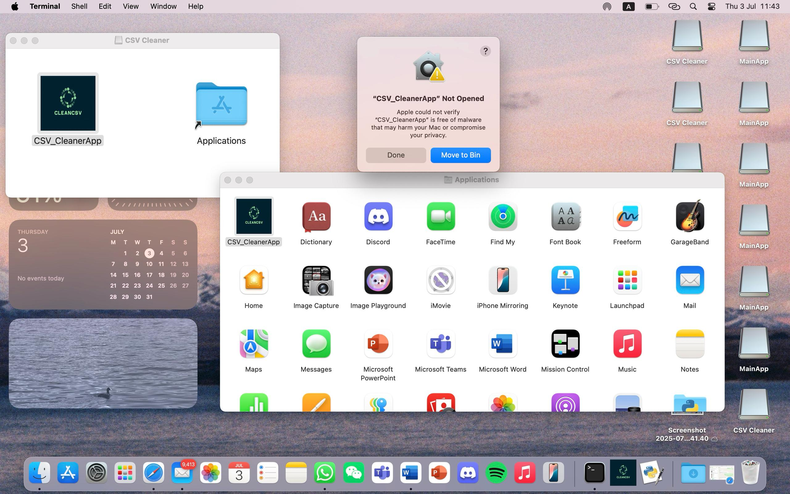
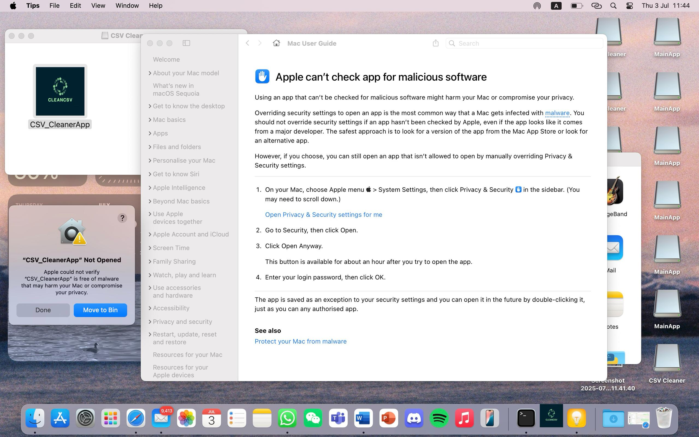
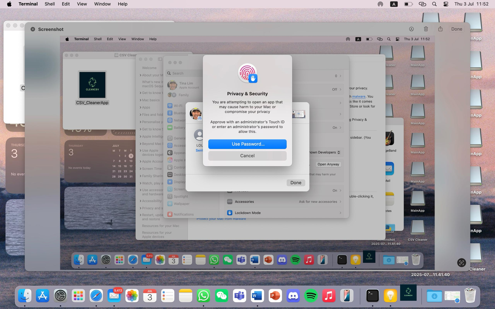
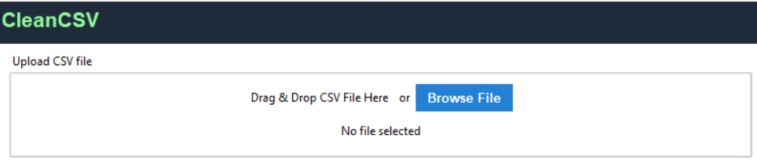
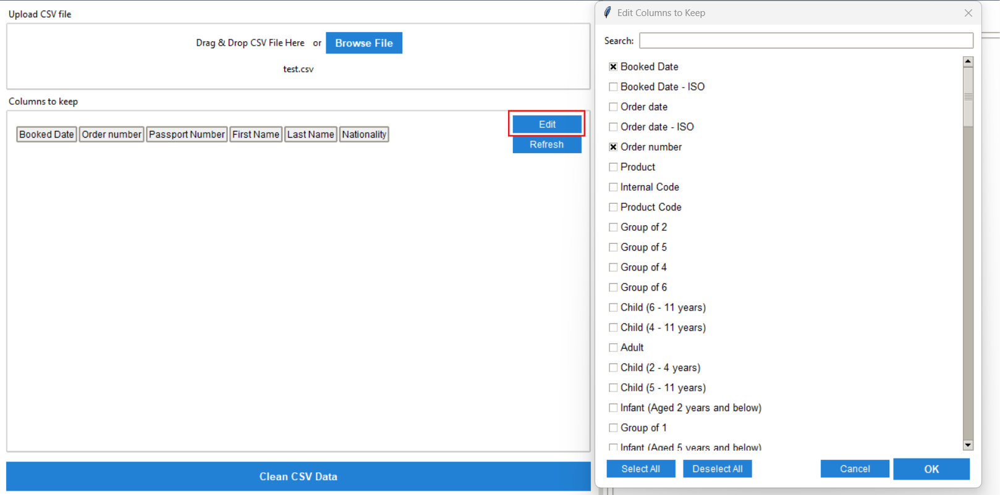
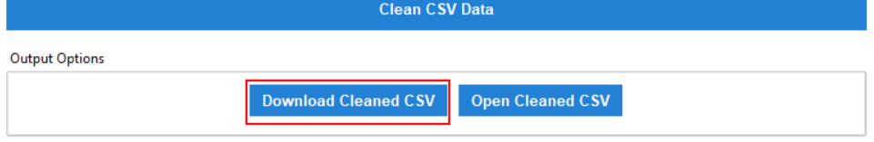

Our project is designed to simplify your data cleaning process, specifically for CSV files.
Working with messy CSV files can be frustrating - empty columns, missing data, inconsistent formatting, and irregular cell sizes make analysis difficult. CleanCSV solves these problems with an intuitive interface that lets you quickly transform messy data into clean, analysis-ready spreadsheets.
Simply import your CSV file, select which columns to keep, and click convert. Our tool handles the rest, outputting a cleaned CSV file that's standardized and ready for your analysis tools.
Due to macOS security regulations, follow these steps to install and open CleanCSV
Download the .dmg file and double-click CSV_CleanerApp in your Downloads or Applications folder.
You'll see a message: "CSV_CleanerApp cannot be opened because Apple cannot check it for malicious software."
In the warning pop-up, click the question mark icon (❓) in the top-right corner.
This will open the Apple Support page with guidance.

Go to System Settings (or System Preferences) and navigate to Privacy & Security in the sidebar.
Under "Security", you'll see: "CSV_CleanerApp was blocked because it's not from an identified developer."
Click Open Anyway, then confirm by clicking Open in the dialog.
macOS will ask you to authenticate with Touch ID (if available) or enter your admin password.
Once completed, the app will open normally in the future without repeating these steps.
Clean your data in just three simple steps
Upload your messy CSV file containing empty columns, missing data, or inconsistent formatting.
Choose which columns to keep in your cleaned file. Our interface makes selection easy with previews.
Get your cleaned CSV file with standardized formatting, no empty columns, and consistent data.
Why choose CleanCSV
Easily select which columns to keep or remove from your dataset.
Identify and fix missing or inconsistent data automatically.
Clean files with thousands of rows in seconds.
All processing happens locally - your data never leaves your computer.
Join thousands of professionals who trust CleanCSV for their data preparation needs
Download Now